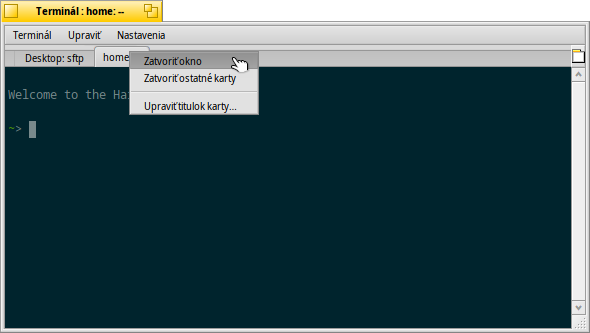
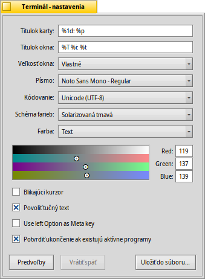

Terminál
Terminál
| Panel: | ||
| Umiestnenie: | /boot/system/apps/Terminal | |
| Nastavenia: | ~/config/settings/Terminal ~/config/settings/profile - pridá/prepíše predvolené nastavenie v /boot/common/etc/profile ~/config/settings/inputrc - pridá/prepíše predvolené nastavenie v /boot/common/etc/inputrc |
Terminál je Haiku rozhranie pre bash, Bourne Again Shell.
Niekoľko odkazov na on-line návody na prácu v shelli nájdete v téme Skriptovanie. Tiež sa pozrite na Aplikácie príkazového riadka špecifické pre Haiku. Tu sa budeme sústrediť na samotnú aplikáciu Terminál.
 Okná a karty
Okná a karty
Môžte si otvoriť toľko Terminálov, koľko potrebujete, buť každý vo vlastnom okne jednoduchým spustením viacerých Terminálov alebo stlačením ALT N z už bežiaceho Terminálu. Alebo použite zobrazenie v kartách a otvorte viacero kariet pomocou ALT T.
Double-clicking into the emtpy part of the tab bar opens a new tab; onto a tab opens a dialog to rename its title. There are several %-designated variables that are explained with a tooltip when you hover the mouse over the text field.
By default, %1d: %p, a tab shows the current directory and, separated by a :, the name of the currently running process (or -- if it's just bash running, probably idling). The screenshot above shows the first tab with a FTP session in the Desktop folder and a second tab idling at home.
Via the Terminal window's title can be edited in a similar way.
Kliknutie pravým tlačidlom na kartu zobrazí kontextové menu , alebo ako dvojité kliknutie, .
Môžete zmeniť veľkosť okna Terminálu ako každého iného okna alebo použiť predvoľby z ponuky . ALT ENTER prepne do celoobrazovkového režimu.
Všetky nastavenia, ktoré meníte priamo prostredníctvom menu , napr. , , alebo , sa zachovajú iba v rámi aktuálnej relácie. Ak chcete, aby tieto zmeny zostali aktívne permanentne, musíte ich použiť v paneli .
Nastavenia
otvára panel na konfiguráciu štandardných nastavení Terminálu.
Most of the offered settings speak for themselves. Not entirely obvious though, the font size is set in the submenu of the popup menu.
Hover your mouse over the "formulas" for naming tab and window titles to get tooltips for the available variables.
You can choose pre-defined color schema like or or create a one by selecting which color you want to change (, , etc.) and then use the color picker below.
A few more options follow: you can have a and choose to .
if you work with certain UNIX software that relies on accessing an extended portion of the ASCII character set, like e.g. GNU Emacs and the GNU readline library.
Activate the checkbox to and you'll be warned when trying to close a Terminal window while an app is still being executed.
| umožní vám uložiť rôzne nastavenia v samostatných profiloch, ktoré pri dvojitom kliknutí otvoria príslušne nastavený Terminál. | ||
| vráti nastavenia, ktoré boli aktívne, keď ste otvorili panel nastavení. | ||
| vráti všetko na predvolené hodnoty |
Klávesové skratky
Zoznam užitočných skratiek nájdete v Klávesové skratky a kombinácie klávesov.
Ďalšia pekná vlastnosť je skôr kombinácia klávesov a myši: Ak podržíte ALT, cesta alebo URL pod kurzorom myši bude zvýraznená. Kliknutie ľavým tlačidlom otvorí súbor, adresár alebo webovú stránku. Kliknutie pravým tlačidlom otvorí kontextovú ponuku, a to buď alebo . Predstavte si, že ste v /MyData/source/haiku/ a máte pod kurzorom cestu generated/objects/haiku/x86_gcc2/release/apps/stylededit/StyledEdit. Druhá z uvedených položiek menu bude mať za výsledok skombinovanú absolútnu cestu <nadýchnite sa>:
/MyData/source/haiku/generated/objects/haiku/x86_gcc2/release/apps/stylededit/StyledEdit.
Ak podržíte ALT SHIFT, zvýrazní sa iba cesta od začiatku po miesto, kde sa nachádza váš kurzor myši.
Mimochodom, kliknutie pravým tlačidlom v okne Terminálu vloží obsah schránky. V kombinácii s kopírovaním časti zvýraznenej cesty to môže byť užitočné na urýchlenie navigácie v hlbokých hierarchiách priečinkov.
Prispôsobenie bashu
Pretože pochádza z unixových systémov, existuje nespočetné množstvo možností, ako upraviť samotný bash. Existujú dva súbory, ktoré sú pre používateľa obzvlášť dôležité: profile a inputrc
Oba súbory môžu byť vytvorené v priečinku /boot/home/config/settings/ a pridať alebo prepísať predvolené nastavenia systému, ktoré sú definované v /boot/common/etc/.
profile
profile sa načíta pri každom otvorení nového Terminálu. Nastavuje to všetky druhy aliasov a premenných, ktoré ovplyvňujú správanie bashu a jeho výzor. Nájdete veľa online zdrojov, ktoré vám priblížia všetky možnosti.
Haiku/BeOS Tip Server má pomerne málo tipov, ako začať, napríklad:
There are more, have a look.
inputrc
inputrc sa zaoberá klávesovými skratkami. Vzhľadom k tomu, že Haiku poskytuje užitočné prednastavenia, pravdepodobne s tým nič viac nemusíte robiť. Ak máte zvláštne potreby tu vám poradí s jeden z mnohých online zdrojov, napr The GNU Readline Knižnica.
Tipy pri práci s Terminálom
Pretiahnutia súboru alebo zložky z okna Trackera do terminálu vloží svoju cestu v mieste kurzora. Ťahaním s pravým tlačidlom myši ponúka ďalšie akcie v kontextovom menu:
Vloži umiestnenie súboru, rovnako ako ťahanie&pustenie ľavým tlačidlom. Zmeni priečinok ťahaného súboru. Vytvára odkaz na ťahaný súbor v aktuálnom pracovnom adresári Terminálu. Presunie ťahaný súbor do aktuálneho pracovného adresára Terminálu. Kopíruje ťahaný súbor do aktuálneho pracovného adresára Terminálu. Ktorýkoľvek súbor môžte otvoriť jeho preferovanou aplikáciou príkazom open [nazov_suboru]. To tiež pracuje so zastúpením aktuálneho (".") a materského ("..") priečinka, ktoré sa potom otvoria v Tracker okne. Takže, otvorte aktuálny pracovný adresár, zadajte:
open .